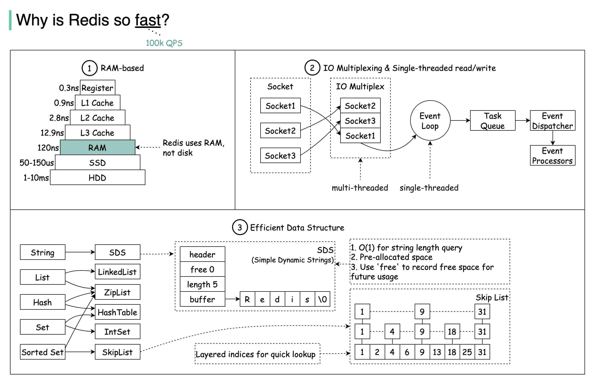

Ratelimit
Rate Limit
固定窗口限流算法 Fixed Window Rate Limiting Algo
滑动窗口限流算法 : 单位时间周期分为n个小周期，分别记录每个小周期内接口的访问次数
漏桶限流算法 : Leaky Bucket Algo , 请求 判断是否达到当前 漏桶 Capacity， 是 refuse， 否 进行服务
令牌桶算法 : 维护一个固定容量的令牌桶，每秒钟会向令牌桶中放入一定数量的令牌。当有请求到来时，如果令牌桶中有足够的令牌，则请求被允许通过并从令牌桶中消耗一个令牌，否则请求被拒绝。
Nginx 限流
限制访问频率和限制并发连接数
ngx_http_limit_req_module
Redis 限流
基于Redis的setnx的操作
基于Redis的数据结构zset
基于Redis的令牌桶算法
Sentinel 限流
B Tree
"Binary Search Tree 也叫 B-"
-
左子树所有节点的值均小于根节点的值
-
右子树所有节点的值均大于根节点的值
-
左右子树也分别为二叉查找树
"红黑树"
红黑树是一种自平衡二叉查找树，通过在插入和删除节点时进行颜色变换和旋转操作，使得树始终保持平衡状态，它具有以下特点：
-
每个节点非红即黑；
-
根节点总是黑色的；
-
每个叶子节点都是黑色的空节点（NIL 节点）；
-
如果节点是红色的，则它的子节点必须是黑色的（反之不一定）；
-
从根节点到叶节点或空子节点的每条路径，必须包含相同数目的黑色节点（即相同的黑色高度）
数据在内存中，红黑树的表现很好.
info "B+ "
- B 树的所有节点既存放键(key) 也存放数据(data)，而 B+树只有叶子节点存放 key 和 data，其他内节点只存放 key。
- B 树的叶子节点都是独立的;B+树的叶子节点有一条引用链指向与它相邻的叶子节点。
- B 树的检索的过程相当于对范围内的每个节点的关键字做二分查找，可能还没有到达叶子节点，检索就结束了。而 B+树的检索效率就很稳定了，任何查找都是从根节点到叶子节点的过程，叶子节点的顺序检索很明显。在 B 树中进行范围查询时，首先找到要查找的下限，然后对 B 树进行中序遍历，直到找到查找的上限；而 B+树的范围查询，只需要对链表进行遍历即可。
综上，B+树与 B 树相比，具备更少的 IO 次数、更稳定的查询效率和更适于范围查询这些优势
Cache
Redis
why so fast

supported applications
消息队列
延时队列
分布式session
Cache 策略
| Write | Read | ||
|---|---|---|---|
| Cache Aside | update DB； delete cache item； | read from cache; missed then read from db ; put data into cache | 考虑强一致场景，写操作需加锁 |
| Read/Write Through | |||
| Write Behind | update to Cache, after while, flush to DB |
Cache Issue
- 雪崩 大量KEY 失效后，大流量直接访问数据库
对KEY设置随机过期时间
限流熔断
数据库读写分离
- 击穿 热点KEY 失效后，大流量直接访问数据库
热点KEY 过期时间设置长
互斥锁，Cache KEY 访问失败后，需要获取锁，才能访问数据库
- 穿透 不存在的KEY，大流量直接访问数据库
布隆过滤器, 先判断是否KEY存在，不存在就直接返回NULL
Cache 淘汰算法
FIFO First In First Out
LFU leastly frequently used
优点：高频使用的数据，可以较长的保存不被淘汰。
缺点：无法缓存某一时间点的热点数据。
LRU leastly recently used
LRU 算法使用页面置换算法，会首先淘汰最长时间未被使用的数据。
优点：热点数据，可以较长的保存不被淘汰
缺点：当某一时间节点产生了大量仅访问了一次的数据，热点数据会被淘汰
LRU - K
LRU-K 算法中需要维护两个队列：历史队列和缓存队列
历史队列保存着每次访问的页面，当页面访问次数达到了 k 次，该页面出栈，并保存至缓存队列；
若尚未达到 k 次则继续保存，直至历史队列也满了，那就根据一定的缓存策略（FIFO、LRU、LFU）进行淘汰；
缓存队列则是保存已经访问 k 次的页面，当该队列满了之后，则淘汰最后一个页面.
LRU-K 算法的核心思想就是将访问一次就能淘汰其余缓存的 “1” 提升为 “K”。
优点：避免了仅访问 1 次就能淘汰其余缓存的 “缓存污染” 问题，提高了缓存命中率。
缺点：多维护了一个历史队列，消耗内存较高
LRU - 2Q
Redis 淘汰
Redis并不会立马删除过期的数据。Redis 采用「惰性删除」+「定期删除」的组合策略，对过期数据进行清理。
惰性删除 当有客户端的请求查询该 key 时，服务端会检查下 key 是否过期，如果过期，则删除该 key
定期删除 会将设置了过期时间的 key 放入到一个独立的字典中，在「定期删除」策略中，会定时遍历这个字典，删除过期的数据
实际内存超出 maxmemory 时，Redis 提供了如下几种策略
noeviction
volatile-lru: 尝试淘汰设置了过期时间的 key，最少使用的 key 优先被淘汰
volatile-ttl: key 的剩余寿命 ttl 的值，ttl 越小越优先被淘汰
volatile-random:
allkeys-lru: 没有设置过期时间的 key 也会被淘汰
allkeys-random: 随机的 key.
持久化
snapshotting, RDB
append-only, AOF
RDB & AOF
集群
-
Master Slave
-
Sentinel
主从复制基础上加入了哨兵节点，实现了自动故障转移,会监控主节点和从节点的运行状态。当主节点发生故障时，哨兵节点会自动从从节点中选举出一个新的主节点，并通知其他从节点和客户端，实现故障转移。
- Cluster
Cluster模式下，Redis将所有的键值对数据分散在多个节点上。每个节点负责一部分数据，称为槽位。通过对数据的分片，Cluster模式可以突破单节点的内存限制，实现更大规模的数据存储。Redis Cluster将数据分为16384个槽位，每个节点负责管理一部分槽位。当客户端向Redis Cluster发送请求时，Cluster会根据键的哈希值将请求路由到相应的节点。具体来说，Redis Cluster使用CRC16算法计算键的哈希值，然后对16384取模，得到槽位编号
基本数据类型
| String | List | Set | Hash | Zset |
|---|---|---|---|---|
| SDS simple dynamic string | Linkedlist | Dict, ZipList | Dict, IntSet | ZipList, SkipList |
SkipList
跳跃表以链表+多层索引的结构， 效率和平衡树媲美 —— 查找、删除、添加等操作都可以在对数期望时间下完成， 并且比起平衡树来说， 跳跃表的实现要简单直观得多
ZipList
Cloud Native
"Intro"
满足云原生最佳技术实践和管理实践要求，应用从需求提出开始就使用云原生资源和服务能力，并最终能够持续交付到云平台的应用；同时在该应用交付完成后还需要具备足够的管控治理能力和可观测性。
Cloud Native 包含
-
微服务， 敏捷基础管理
-
DevOps, CI&CD, Conways Law, etc
-
应用容器化 (software stack to be containerized)
-
面向微服务 (microservice oriented)
-
容器编排调度 (orchestrated)
-
服务网格 (service mesh)
微服务中分 侵入式架构和非侵入式架构
侵入式架构 - Dev 调用各种组件，如 RPC ，负载均衡，熔断等，业务代码与非功能性代码耦合
非侵入式架构 - Dev 关注业务代码， Service Mesh 关注其他非功能性
-
不可变基础设施 (Immuntable Infrastructure)
-
声明式API (declarative API)
info "Why"
| Req | Solution |
| -------------------- | -------- |
| 更快的上线需求 | CI&CD |
| 细致的故障探测和发现 | [微服务](Microservices.md) |
| 故障能自动隔离 | [微服务](Microservices.md) |
| 故障可以自动恢复 | [微服务](Microservices.md) |
| 水平扩容 | [微服务](Microservices.md) |